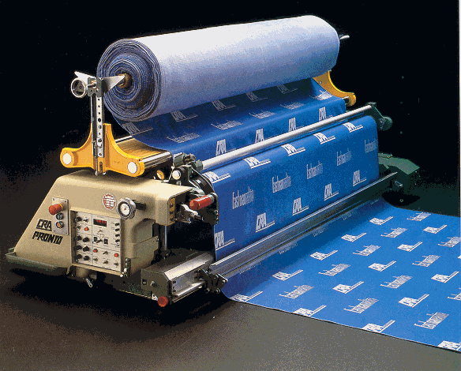
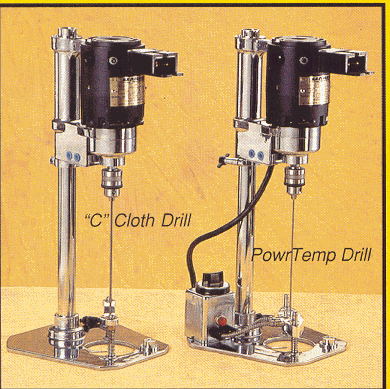
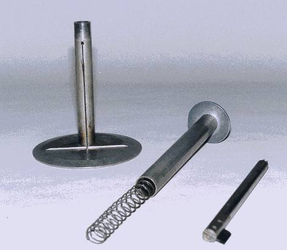
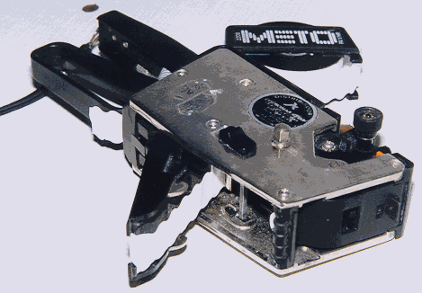
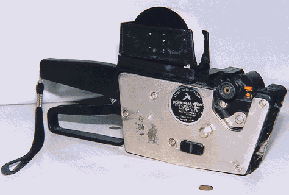
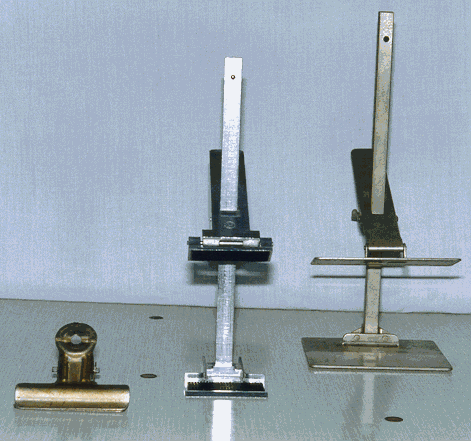
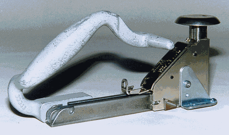
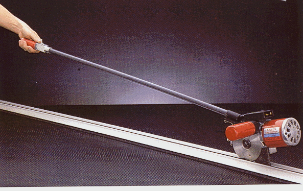
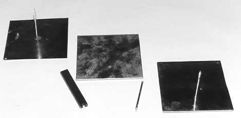

TRAZO Y CORTE INDUSTRIAL
|
1 |
|
|
2 |
|
|
3 |
|
|
4 |
|
|
5 |
|
|
6 |
|
|
7 |
|
|
8 |

4.1- CARRO EXTENDEDOR AUTOMÁTICO:
Presenta dos características fundamentales de extendido:
El empleo de carros extendedores y dentro de estos la elección de unos o otros dependerá de las características en las de fabricación que pueden ser: largo del tendido , número de capas a extender y/o tipo de tejido.
En general puede decirse que el grado de interés es creciente en función directa al número de telas por extender de la misma pieza.


4.2 - MÁQUINAS PERFORADORAS
Dentro de los patrones existen referencias interiores que después han de ser ralizadas con la pinzas troceadas. Tal es el caso de los puntos de clavado de bolsillos de parche, pinzas etc, que deben de quedar colocadas en todas las prendas en la misma posición.
Para solucionar esta operación se emplea los peforadores. Según su funcionamiento los perforadores son de cuatro tipos:
4.2.1 - PERFORADORES GIRATORIOS
Estos constan de agujas de distintos diámetros según el tipo de tejidos a taladrar . Está conectada a un motor que la hacen girar y todo el conjunto está sujeto a un armazón que lo mantiene en posición vertical . Este tipo de perforador se coloca sobre el paquete de telas encima de la marca que hay que taladrar y haciendo bajar el conjunto de motor y aguja, esta va penetrando en el tejido , realizando un agujero en todas las telas y en el punto deseado.
En los tejidos sintéticos se acondiciona en la base del perforador un bloque calefactor que calienta la aguja , esta al entrar en el colchón de tela va quemando el borde del agujero fundiéndose al retirar la aguja o taladro. Al fundirse el tejido da una mayor estabilidad y por lo tanto una mayor calidad en las piezas cortadas.
4.2.2 - PERFORADORES ALTERNATIVOS
Este tipo de prforador transforma por medio de un juego de engranajes reductores el movimiento giratorio del motor en alternativo; al mismo tiempo que ejecuta un vaivén de percusión, con todo esto se consigue que la aguja abra la malla del tejido sin romperla , consiguiendo un agujero limpio y sin estropear la pieza que se está taladrando.
4.2.3- PERFORADORES DE TINTA
Consta de una aguja taladrada en su interior, por donde se introduce una aguja fluorecente que está conectada a un motor de bajas revoluciones , de esta forma la aguja penetra en el tejido fácilmente gracias a su movimiento giratorio y va marcando un punto entintado en cada capa. Este punto únicamente será visible cuando la prenda se encuentra bajo una luz ultravioleta , por lo tanto dentro del equipo stándar de estos perforadores se incluye una lámpara de tubos infrarojos para colocar en el puesto de trabajo, dentro de la sala de costura , donde se haga necesario ver los puntos y marcas para realizar la operación correspondiente.
El operario al realizar la operación debe cuidar que la aguja o taladro no perfore la superficie de la mesa , para evitar esto se utiliza una hoja metálica o de madera delgada que se colocará entre la superficie de la mesa y el tendido.


4.3- MARCADOR DE PIQUETES
En un principio se han empleado las mismas máquinas de cortar para realizar esta operación, pero en muchos casos representa un impedimento para la misma labor de cortar e incluso se aprecian diferencias de profundidad en las marca de unas piezas a otras del mismo colchón, afectando la calidad de la prenda.
Como elemento auxiliar de esta operación se ha empleado un aparato sencillo que consta de una pequeña cuchilla en forma de uña que está colocada sobre una guía vertical y que se conserva en la posición mas alta debido a un muelle interior. Cuando se desea marcar una referncia exterior en un paquete de telas se aplica el aparato contra ellas y con la mano se presiona hacia abajo de forma que la cuchilla corte todas las hojas o capas
Esta solución que en un principio parece rápida y económica se convirte en muchos casos difícil e imposible, cuando el número de capa sea elevado , tejidos demaciados rígidos; o tejidos con mucha elasticidad.
En estos casos se emplean marcadores por calor, que consisten en una cuchilla vertical en forma de V que está conectada a una fuente de calor, producido normalmente por una resistencia eléctrica. Esta tiene varias tormas para producir diferentes intensidades de calor según los tejidos a marcar.


4.4- TIQUETEADORAS O NUMERADORES
Una vez realizado el corte se efectúa en la mayoría de los casos el etiqueteado de todas las piezas que componen cada uno de los paquetes . Estas etiquetas tienen la misión de servir de control y deben llevar las referncias suficientes para identificar cualquier pieza y determinar a que paquete pertenecen y con que pieza debe unirse.
Para ello, existen diferentes numeradores en el mercado trabajando con números o imprentillas. La información que debe llevar es la siguiente: Talla, modelo, orden consecutivo de la capas. Estas últimas cifras saltarán de una en una cuando se extienda cara arriba y de dos en dos cuando se extienda en zig - zag.
Existen dos tipos de máquinas a emplear:
4.4.1 - MÁQUINAS MÓVILES:
Son portátiles conocidas como pistolas de etiquetar, muy similares en su funcionamiento a las empleadas en grandes almacenes y suprmercados para marcar los diferentes productos.
4.4.2 - MÁQUINAS FIJAS :
Son las que permanecen en un lugar determinado y necesitan que los paquetes a etiquetar vayan hasta ella. Estas máquinas según la forma de fijar la etiqueta se dividen en :
 

Instrumento para sujetar los bloques de tela para evitar su deslizamiento. son de dos tipos:
4.5.1 - Normales : Son similares a las que existen en el mercado y se usan cuando el extendido es de poca altura y corresponde a la cobertura de la boca de la pinza que es de 4 a 8 cms.
4.5.2 - Verticales : Consiste en un fleje horizontal que corre a lo largo de una guía vertical, la marcada y el paquete se introducen entre el fleque y la base de la guía , manteniéndose esta sujeción por presión sobre el fleje horizontal. Con este tipo de pinzas se puede llegar a sujetar alturas de corte de 20 a 25 cms.
El empleo de las pinzas trae consigo el uso de una cantidad considerable de ellas y el cambio reiterado de posición de éstas durante la operación de cortar, ya que estorban para realizar la operación.


4.6 - GRAPADORA
Es una cosedora a la cual le falta la base, permitiendo colocar un gancho en las zonas interiores del extendido; los ganchos o grapas usados en confección varían en su tamaño y forma , dependiendo del tipo de tejido y el número de capas extendidas.
Los ganchos o grapas tienen un inconveniente y es que la sujeción no es muy fieble en los tejidos esponjosos - blandos o muy elásticos.


4.7 - CORTADORA DE EXTREMOS
Uno de los principales problemas de tirar de una tela de un rollo montado al extremo de la mesa de corte, es el tiempo , esfuerzo y tejidos derrochados al cortar cada capa. Puesto que al hacer un corte recto es difícil, el extendedor deja siempre un margen adicional.
La cortadora de extremos ofrece mejoras significativas en velocidad, eficiencia y precisión en esta operación. La cuchilla circular guiada por un carril permite al extendedor efectuar un corte mas rápido y exacto de cualquier tipo de material. Tiene también un mecanismo de elevación que permite elevar la pista por encima de la capa de corte y luego hacerla bajar sobre el tejido extendido, manteniendo la capa de corte alineada en el extremo de corte.
Posee también un mecanismo de afilado automático, este se realiza con un esmeril situado en lado izquierdo superior de la cuchilla, este proceso se realiza manualmente.


4.8 - PINES
Se utilizan para casar los tejidos a rayas y cuadros para mayor calidad al realizar el extendido. Son colocados en los extremos del tendido, se marcan tramos ( 50 o 70 cms)a lo largo del tendido, para luego aplomarlos con una cuerda de un color distinto del tejido. Cada capa debe ir enzartada en cada uno de los pines que se coloquen a lo largo y ancho del tendido
Los pines se deben retirar a medida que se va cortando, no retirarlos todos a la ves.
Existe gran variedad de pines : Fijos, removibles y de diferentes tamaños
